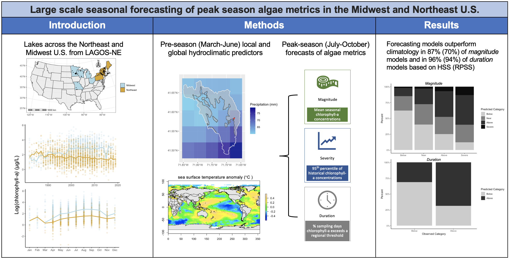
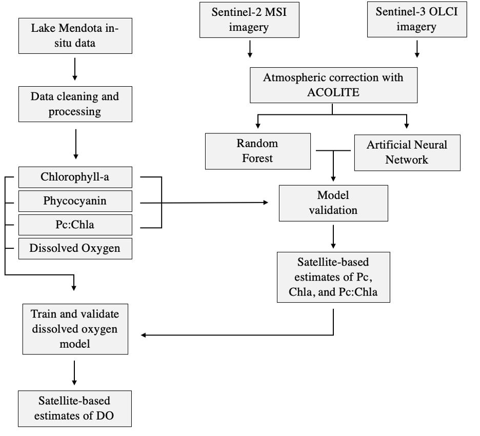
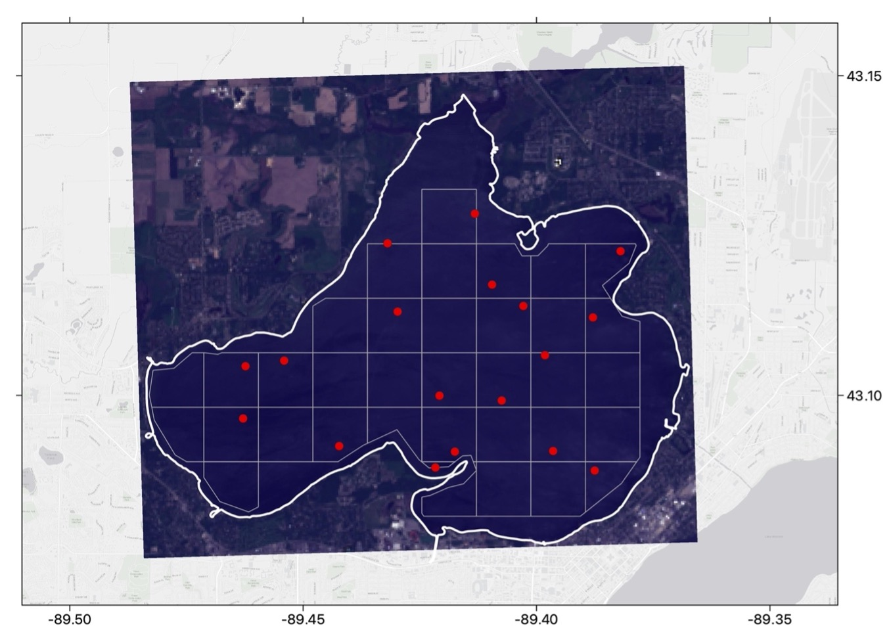
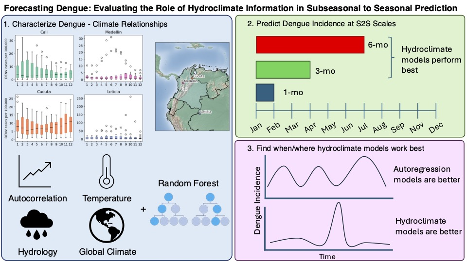
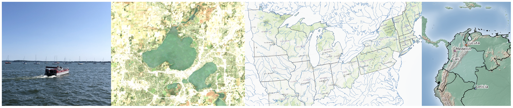

Forecasting
Sub-seasonal to seasonal harmful algal bloom early warning systems.
Remote Sensing
Satellite + in-situ retrievals for pigments and oxygen at lake scale.
Hydroclimatology and Ecosystem Extremes
An outline for project summaries spanning weeks to seasons.
1. Algae Forecasting & Early Warning Systems
Harmful algal bloom forecasts that extend management lead time from days to seasons.
1. Algae Forecasting & Early Warning Systems
Harmful algal bloom forecasts that extend management lead time from days to seasons.
I develop forecasting systems that extend decision-making horizons for water managers from days to seasons. This work focuses on harmful algal blooms, where earlier warning can inform monitoring strategies, beach closings, and risk communication.
Contributions- Sub-seasonal cyanobacteria forecasting for Lake Mendota (Harmful Algae, 2021)
- Seasonal forecasting framework (Lake & Reservoir Management, 2022)
- Regional extension to 178 lakes (Water Research, 2023)
- Satellite pixel-scale forecasts for Florida lakes (Harmful Algae, 2025)

Season-ahead Forecasts of Harmful Algae

2. Remote Sensing of Water Quality
Satellite-enabled retrievals of water quality indicators linked to field observations.
2. Remote Sensing of Water Quality
Satellite-enabled retrievals of water quality indicators linked to field observations.
I combine satellite imagery with in-situ monitoring to retrieve algal pigments and dissolved oxygen, enabling scalable lake-wide water quality assessment. This work integrates Sentinel-2 and Sentinel-3 observations with machine learning models for robust, transferable workflows.
Contribution- Machine-learning retrievals of pigments and dissolved oxygen (Water Resources Research, 2023)


Merging Ocean Color Datasets
A placeholder for future work on combining ocean color products across sensors, platforms, or processing streams to support more consistent inland and coastal water quality analysis.
- Datasets and sensors to be merged
- Approach for harmonization or cross-calibration
- Applications, products, or project outcomes
3. Other Projects
Other research projects focused around hydroclimatology, forecasting, and ecological extremes.
3. Other Projects
Other research projects focused around hydroclimatology, forecasting, and ecological extremes.
Hydroclimatology and subseasonal-to-seasonal forecasting can be applied to a wide variety of water- and ecology-related extremes. Below are some of my additional projects in this area.
Project OutlineS2S Forecasting for Dengue Virus
Dengue fever is a mosquito-borne viral disease rapidly creating a significant global public health burden, particularly in urban areas of tropical and sub-tropical countries. Using climate variables to predict dengue cases at longer (weeks to months) lead times may help improve preparation for dengue outbreaks.
- We develop forecasts for DENV at 1‐, 3‐, and 6‐ month lead times for four cities across Colombia (Cali, Cúcuta, Medellín, and Leticia)
- Results show that climate information is most useful for dengue forecasts at 3‐ and 6‐ month lead times
- Evaluating Hydroclimate Information in Dengue Forecasting (GeoHealth, 2024)

Project Title
Brief 1-2 sentence summary of the forecasting question, system, or application.
- Motivation or management relevance
- Forecast horizon, methods, or datasets
- Main result, application, or paper link
